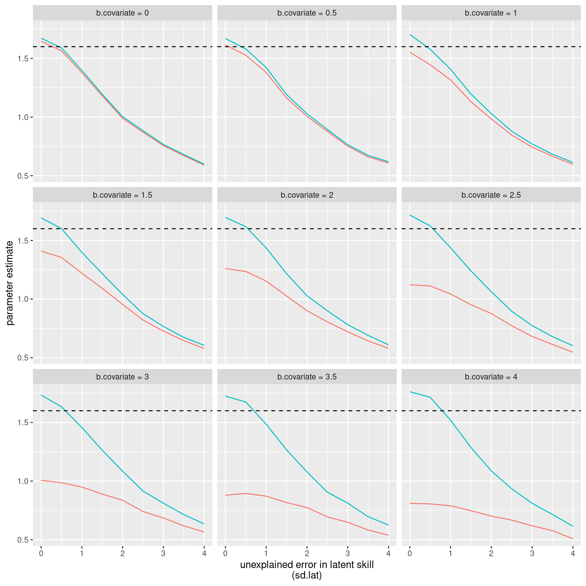
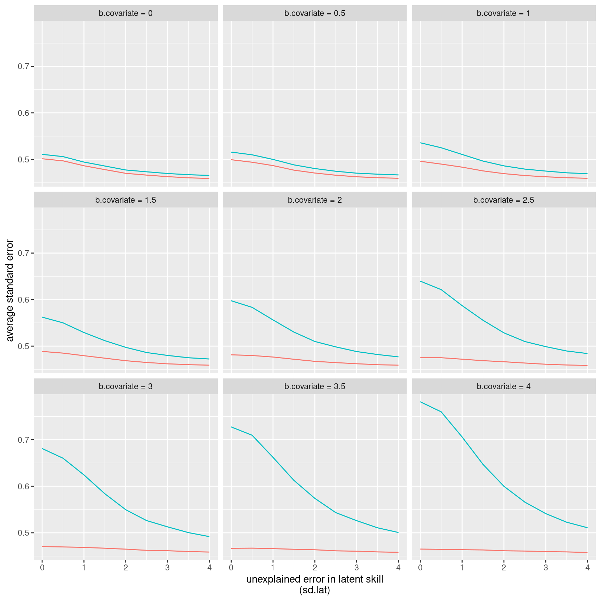
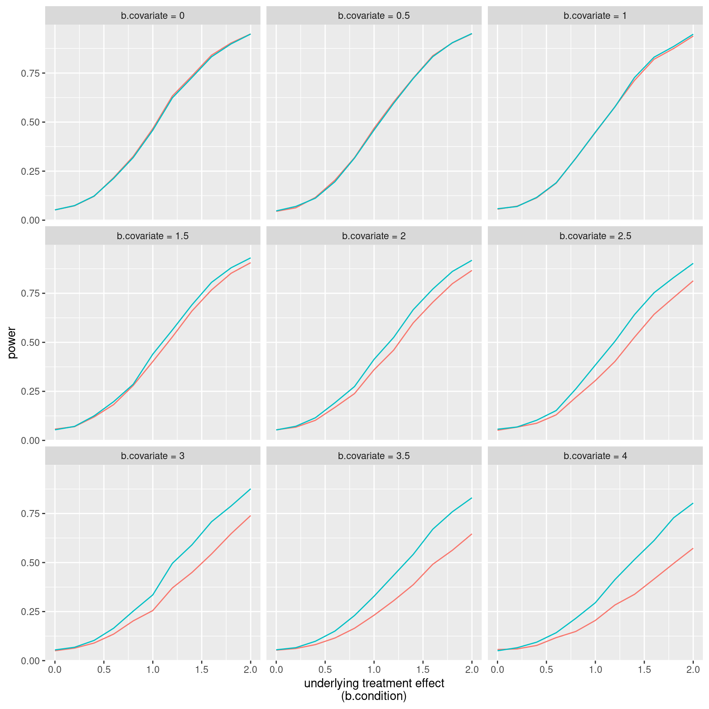
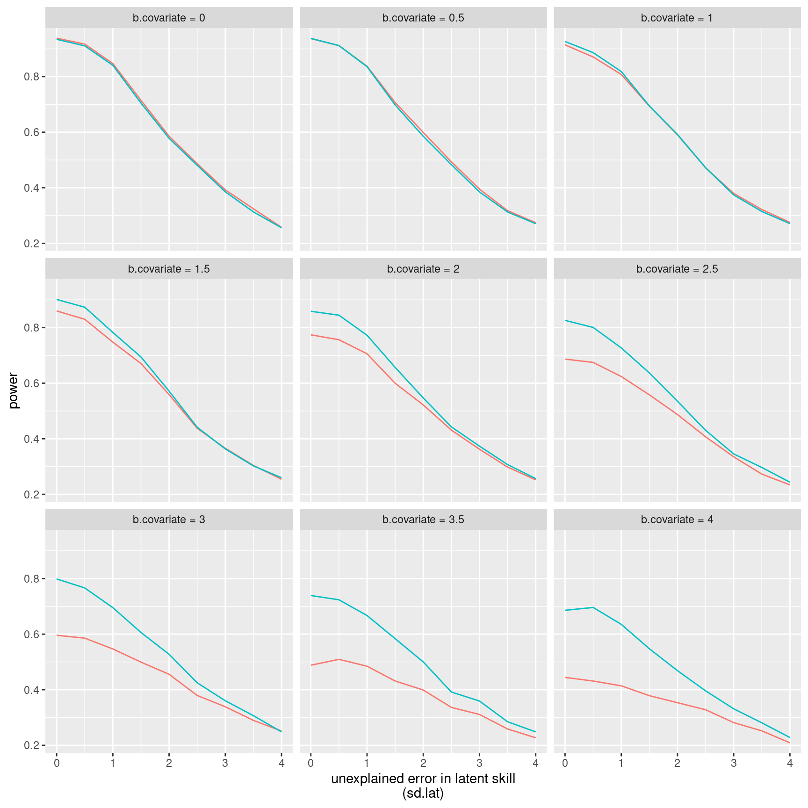

p.correct = plogis(-0.5 + b.condition * condition + b.covariate * covariate + rnorm(80, sd.lat))Covariate adjustment in logistic regression — and some counterintuitive findings
power
effect sizes
logistic regression
R
Including sensible covariates is a good idea when analysing continuous experimental data, but when I learnt that its benefits may not carry entirely carry over to the analysis of binary data, I wasn’t sure that I’d fully understood the implications. This post summarises the results of some simulations that I ran to learn more about the usefulness of covariates when analysing binary experimental data.
Background
My previous discussions of the usefulness of including covariates when analysing randomised experiments (here and here) dealt with the case in which the dependent variable is continuous and could be analysed in a linear regression model. In a nutshell, including sensible covariates in such an analysis increases precision and power and does not bias the estimates of the treatment effect.
I mostly deal with binary dependent variables (e.g. presence v. absence or correct v. incorrect), however, which can be analysed in logistic regression models. According to Robinson and Jewell (1991), the benefits of covariate adjustment in linear regression don’t fully apply to logistic regression models. I wasn’t sure whether I had fully understood their take-home points (reading math-heavy papers means reading selectively for me), though. As I am currently planning a number of randomised experiments with binary outcome variables, I’d like to know whether it’d be useful to extract a number of additional variables that are known to related to this outcome but that aren’t of primary interest to me. To this end, I ran a couple of simulations that probe the effects of covariate adjustment in logistic regressions on the effect size estimate, its standard error and the statistical power for finding a treatment effect. I typically analyse my data using logistic mixed-effects models (see Jaeger 2008), but as a first step, I investigated the effects of covariate adjustment in ‘normal’ logistic regression models, i.e. models without random intercepts and random slopes.
Set-up: A simple experiment
The set-up of the simulation is based on the one reported in my first blog post. The narrative is as follows. Eighty German-speaking participants (the number of participants can be adjusted using the n parameter in the simulation) are randomly assigned to two equal-sized groups. Half of the participants are told something about Dutch grapheme-to-phoneme correspondences (say that Dutch
However, the participants differ in their knowledge of English, which may also affect their translation accuracy. Would it be worth the effort to give the participants an English-language test in order to be able to take this covariate (English skills) into account during the analysis, even though we’re not really interested in this variable?
Skippable: Settings
I assumed that the accuracy variable (correct vs. incorrect) was generated from a binomial distribution. The probability of a correct translation was specified as:
In words, condition (experimental v. control) has an effect (in log-odds) that is equal to b.condition (i.e. the slope of condition in log-odds), the covariate has an effect (in log-odds) equal to b.covariate and participants could differ randomly in their underlying ‘translation skills’, which is captured by the rnorm term – the sd.lat parameter specifies the standard deviation of this normal distribution.
For the simulation, the covariate (English test performance) is specified to be uniformly distributed between -1 and 1, whereas the parameters b.condition, b.covariate and sd.lat are systematically varied. For each combination of parameters, 10,000 (update (2023-08-27): 3,000) datasets were generated that were analysed in two logistic models: one without and one with the covariate. From each model, I culled the estimate of the treatment effect and its standard error. Additionally, the p-value for the treatment effect in each model was computed twice: once based on Wald’s z-test and once based on the χ² test in a (sequential) analysis of deviance in which the treatment effect was added last.
Update (2023-08-27): I’ve run the simulation again but with only 3,000 datasets per parameter combination. The plots from the original blog post were redrawn using ggplot2 instead of base R.
Results
Estimates of the treatment effect
The first question is whether the logistic models are able to correctly estimate the treatment effect underlying the simulated data (b.condition). For this comparison, b.condition was fixed at 1.6, meaning that participants in the treatment group would be roughly 5 times (4.9530324) more likely to provide a correct translation than those in the control group. The parameter b.covariate, i.e. the underlying slope parameter of linking the covariate to the outcome in log-odds space, varied between 0 and 4 (0, 0.5, 1, 1.5 etc.). The parameter sd.lat, i.e. the standard deviation of the unexplained variability in the latent ‘translation skill’ variable in log-odds space, also varied between 0 and 4 in the same fashion.
Figure 1 shows the average estimated treatment effect for the covariate-adjusted (blue) and unadjusted (red) logistic models:

b.condition = 1.6 (dashed line). Red: the estimate for the logistic model without the covariate. Blue: the estimate for the logistic model with the covariate.I noticed four things when looking at these graphs:
Both the adjusted and unadjusted models massively underestimate the true treatment effect (dashed line at 1.6) in the presence of substantial residual variability in the latent skill unaccounted for by the model. The treatment estimate seems to be biased towards zero, which is new to me.
As the variability in the latent skill increases due to a stronger effect of the covariate, the unadjusted model (blue) performs increasingly more poorly relative to the model that adjusts for the covariate effect (red). This can be understood in terms of point 1: The variability in the latent skill increases when
b.covariateincreases. Since the unadjusted model does not account for this increase whereas the adjusted model does, the bias towards zero affects the unadjusted model.The treatment effect is slightly but systematically overestimated when all the variability in the latent skill is accounted for by variables in the model: When
sd.latis 0, the adjusted model always yields estimates that are slightly higher than 1.6, and the unadjusted model similarly yields an estimate that is slightly too high when bothsd.latandb.covariateare 0.Adjusting for an irrelevant covariate (
b.covariate = 0) does not noticeably affect the treatment estimate.
When the goal is to estimate a treatment effect, then, covariate adjustment seems useful but cannot be counted on to yield an unbiased of the treatment effect.
Standard errors of the treatment effect
Robinson and Jewell (1991) noted that adjusting for a covariate always decreases precision. To verify whether I’d understood this correctly, I computed the mean standard error of the treatment estimate for each set of 10.000 models. The results are shown in Figure 2:

b.condition = 1.6. Red: the estimate for the logistic model without the covariate. Blue: the estimate for the logistic model with the covariate.Two things were striking:
The standard error decreases as the unexplained variability in the latent skill increases. This, too, is counter-intuitive and new to me.
The standard error is consistently larger when adjusting for a covariate, even when the covariate is important. I assume it is this that Robinson and Jewell (1991) mean when they state that adjusting for covariates reduces precision of the treatment effect estimate.
So the bias towards zero caused by variability in the latent skill that is unaccounted for in the statistical model and which would give rise to reduced statistical power is accompanied by smaller standard errors, which would increase statistical power. Furthermore, the absolute estimates of the treatment effect are larger in adjusted models than in unadjusted models (which would yield greater statistical power), but on the other hand, the standard errors are larger in these models, too (which would reduce statistical power).
The obvious question is whether adjusting for covariates increases statistical power giving these two opposite forces.
Statistical power
For these simulations, I computed the proportion of the models that returned a significant (p < 0.05) treatment effect according to a Wald z-test and a χ²-test in a sequential analysis of deviance. The differences in power between the Wald z-test and the χ²-test were largely negligible, and only the power for the χ²-tests is reported.
Figure 3 shows how the study’s power varies as a function of the impact of the covariate and the underlying treatment effect:

sd.lat = 1. Red: the estimate for the logistic model without the covariate. Blue: the estimate for the logistic model with the covariate.I noticed three things:
Unsurprisingly, power increases as the treatment effect increases.
Adjusting for a covariate increases power when the covariate is strongly correlated with the outcome variable. It only has a negligible effect when the relationship is low, hower.
With 80 participants, the loss of one degree of freedom for modelling an unimportant covariate (
b.covariate = 0) doesn’t affect the study’s power. For small samples, this may not be the case, though I haven’t run simulations to test this intuition.
In terms of power, then, adjusting for a covariate in a logistic model doesn’t hurt. Whether the benefit of including a covariate in the analysis outweighs the effort to collect these data may be debatable when the relationship between the covariate and the outcome isn’t too strong, however.
Figure 4 shows how power varies according to unaccounted variability in the latent skill:

b.condition = 1.6. Red: the estimate for the logistic model without the covariate. Blue: the estimate for the logistic model with the covariate.Again, two points are noteworthy:
Adjusting for a covariate is especially useful if this covariate accounts for most of the variability in the latent skill (low
sd.latvalues).While unmodelled variability in the latent skill reduces both the treatment estimate and its standard error, the overall effect is a reduction in power.
Conclusions
All in all, covariate adjustment seems beneficial in terms of power and ‘accuracy’ (but not precision!) of the treatment effect in logistic models. That said, estimates of treatment effects seem bound to be underestimations when not all information relevant to the underlying data generating process can be brought under control, even in a randomized experiment. I don’t fully grasp the intuition behind these findings, but being aware of them is a first step.
Whether the effort of collecting a covariate so that it can be included in the model is worth it in terms of effort, time and cost would seem to depend on its potential to explain between-subjects differences that aren’t linked to the experimental condition.
Most of this was new and surprising to me, so I can’t guarantee that something hasn’t horribly gone wrong in my simulations. Please let me know if you spot an error! For a next post, I plan to take a look at covariate adjustment in logistic mixed-effects regression.
R code
simulate.logistic generates one data point each for n participants. The probability of a success (in log-odds) is a function of the participants’ covariate scores (slope parameter: b.covariate), the condition to which they were randomly assigned (b.condition) as well as normally distributed unexplained factors (with a standard deviation of sd.lat). Two models are computed for this dataset with n observations: one without and one with a covariate. For each model, the estimated treatment effect, its standard error and two p-values are computed.
simulate.logistic <- function(n, b.covariate = 2, b.condition = 1, sd.lat = 1) {
covariate <- runif(n, -1, 1)
condition <- sample(c(rep(1, n/2), rep(0, n/2)))
outcome.logodds <- -0.5 + b.covariate*covariate + b.condition*condition + rnorm(n, sd = sd.lat)
outcome.binary <- factor(rbinom(size = 1, n = n, prob = plogis(outcome.logodds)))
# Model without covariate
mod.nocov <- glm(outcome.binary ~ factor(condition), family = "binomial")
# Estimate of condition effect
estimate.nocov <- summary(mod.nocov)$coefficients[2, 1]
# Standard error of estimate
sterror.nocov <- summary(mod.nocov)$coefficients[2, 2]
# P-value of Wald z
p.z.nocov <- summary(mod.nocov)$coefficients[2, 4]
# P-value of analysis of deviance
p.x2.nocov <- anova(mod.nocov, test = "Chisq")[2, 5]
# Model with covariates
mod.cov <- glm(outcome.binary ~ covariate + factor(condition), family = "binomial")
# Estimate of condition effect
estimate.cov <- summary(mod.cov)$coefficients[3, 1]
# Standard error of estimate
sterror.cov <- summary(mod.cov)$coefficients[3, 2]
# P-value of Wald z
p.z.cov <- summary(mod.cov)$coefficients[3, 4]
# P-value of sequential analysis of deviance
p.x2.cov <- anova(mod.cov, test = "Chisq")[3, 5]
return(list(estimate.nocov, estimate.cov,
sterror.nocov, sterror.cov,
p.z.nocov, p.z.cov,
p.x2.nocov, p.x2.cov))
}replicate.logistic takes the function simulate.logistic and runs it a large number of times (runs). It then returns the average slope and standard error for each modelling approach as well as their estimated power.
replicate.logistic <- function(runs = 1000,
n = 100,
b.covariate = 2,
b.condition = 1,
sd.lat = 1) {
# run simulate.logistic() a number of times
sims <- replicate(runs, simulate.logistic(n, b.covariate, b.condition, sd.lat))
# Compute average slope
slope.nocov = mean(unlist(sims[1, ]))
slope.cov = mean(unlist(sims[2, ]))
# Compute average standard error
se.nocov = mean(unlist(sims[3, ]))
se.cov = mean(unlist(sims[4, ]))
# Compute average power Wald
power.z.nocov = mean(unlist(sims[5, ]) <= 0.05)
power.z.cov = mean(unlist(sims[6, ]) <= 0.05)
# Compute average power analysis of deviance
power.x2.nocov = mean(unlist(sims[7, ]) <= 0.05)
power.x2.cov = mean(unlist(sims[8, ]) <= 0.05)
# Spit it all out
return(list(slope.nocov = slope.nocov,
slope.cov = slope.cov,
se.nocov = se.nocov,
se.cov = se.cov,
power.z.nocov = power.z.nocov,
power.z.cov = power.z.cov,
power.x2.nocov = power.x2.nocov,
power.x2.cov = power.x2.cov))
}replicate.logistic is then run 10,000 (update: 3,000) times for a combination of b.covariate and b.condition values. For this simulation, n is fixed at 80 and sd.lat at 1. For this, I use the mcmapply() function in the parallel package:
# This tabulates all relevant combinations of b.covariate and b.condition
grid <- expand.grid(b.covariate = seq(0, 4, 0.5),
b.condition = seq(0, 2, 0.2))
library(parallel)
# Run replicate.logistic 3,000 times for every combination of b.covariate and b.condition contained in 'grid'
# I'm not sure whether this works on Mac or Windows; perhaps use mapply instead of mcmapply.
simulatedResults <- mcmapply(replicate.logistic,
b.covariate = grid$b.covariate,
b.condition = grid$b.condition,
# set fixed parameters
MoreArgs = list(runs = 3000,
n = 80, sd.lat = 1),
# distribute work over CPU cores
mc.cores = detectCores())
# Output results (transposed for clarity)
simulatedResults <- cbind(grid, data.frame(t(simulatedResults)))
# Unlist columns and save
library(tidyverse)
simulatedResults |>
mutate(across(where(is.list), unlist)) |>
write_csv("simulatedResults.csv")I used the simulatedResults data for Figure 3. For Figures 1, 2 and 4, I varied b.covariate and sd.lat and fixed b.condition at 1.6:
grid2 <- expand.grid(b.covariate = seq(0, 4, 0.5),
sd.lat = seq(0, 4, 0.5))
simulatedResults2 <- mcmapply(replicate.logistic,
b.covariate = grid2$b.covariate,
sd.lat = grid2$sd.lat,
# set fixed parameters
MoreArgs = list(runs = 3000,
n = 80, b.condition = 1.6),
# distribute work over CPU cores
mc.cores = detectCores())
# Output results (transposed for clarity)
simulatedResults2 <- cbind(grid2, data.frame(t(simulatedResults2)))
# Unlist columns and save
simulatedResults2 |>
mutate(across(where(is.list), unlist)) |>
write_csv("simulatedResults2.csv")Software versions
devtools::session_info()─ Session info ───────────────────────────────────────────────────────────────
setting value
version R version 4.3.1 (2023-06-16)
os Ubuntu 22.04.3 LTS
system x86_64, linux-gnu
ui X11
language en_US
collate en_US.UTF-8
ctype en_US.UTF-8
tz Europe/Zurich
date 2023-08-27
pandoc 3.1.1 @ /usr/lib/rstudio/resources/app/bin/quarto/bin/tools/ (via rmarkdown)
─ Packages ───────────────────────────────────────────────────────────────────
package * version date (UTC) lib source
bit 4.0.5 2022-11-15 [1] CRAN (R 4.3.0)
bit64 4.0.5 2020-08-30 [1] CRAN (R 4.3.0)
cachem 1.0.6 2021-08-19 [2] CRAN (R 4.2.0)
callr 3.7.3 2022-11-02 [1] CRAN (R 4.3.1)
cli 3.6.1 2023-03-23 [1] CRAN (R 4.3.0)
colorspace 2.1-0 2023-01-23 [1] CRAN (R 4.3.0)
crayon 1.5.2 2022-09-29 [1] CRAN (R 4.3.1)
devtools 2.4.5 2022-10-11 [1] CRAN (R 4.3.1)
digest 0.6.29 2021-12-01 [2] CRAN (R 4.2.0)
dplyr * 1.1.2 2023-04-20 [1] CRAN (R 4.3.0)
ellipsis 0.3.2 2021-04-29 [2] CRAN (R 4.2.0)
evaluate 0.15 2022-02-18 [2] CRAN (R 4.2.0)
fansi 1.0.4 2023-01-22 [1] CRAN (R 4.3.1)
farver 2.1.1 2022-07-06 [1] CRAN (R 4.3.0)
fastmap 1.1.0 2021-01-25 [2] CRAN (R 4.2.0)
forcats * 1.0.0 2023-01-29 [1] CRAN (R 4.3.0)
fs 1.5.2 2021-12-08 [2] CRAN (R 4.2.0)
generics 0.1.3 2022-07-05 [1] CRAN (R 4.3.0)
ggplot2 * 3.4.2 2023-04-03 [1] CRAN (R 4.3.0)
glue 1.6.2 2022-02-24 [2] CRAN (R 4.2.0)
gtable 0.3.3 2023-03-21 [1] CRAN (R 4.3.0)
hms 1.1.3 2023-03-21 [1] CRAN (R 4.3.0)
htmltools 0.5.5 2023-03-23 [1] CRAN (R 4.3.0)
htmlwidgets 1.6.2 2023-03-17 [1] CRAN (R 4.3.1)
httpuv 1.6.11 2023-05-11 [1] CRAN (R 4.3.1)
jsonlite 1.8.7 2023-06-29 [1] CRAN (R 4.3.1)
knitr 1.39 2022-04-26 [2] CRAN (R 4.2.0)
labeling 0.4.2 2020-10-20 [1] CRAN (R 4.3.0)
later 1.3.1 2023-05-02 [1] CRAN (R 4.3.1)
lifecycle 1.0.3 2022-10-07 [1] CRAN (R 4.3.0)
lubridate * 1.9.2 2023-02-10 [1] CRAN (R 4.3.0)
magrittr 2.0.3 2022-03-30 [1] CRAN (R 4.3.0)
memoise 2.0.1 2021-11-26 [2] CRAN (R 4.2.0)
mime 0.10 2021-02-13 [2] CRAN (R 4.0.2)
miniUI 0.1.1.1 2018-05-18 [1] CRAN (R 4.3.1)
munsell 0.5.0 2018-06-12 [1] CRAN (R 4.3.0)
pillar 1.9.0 2023-03-22 [1] CRAN (R 4.3.0)
pkgbuild 1.4.2 2023-06-26 [1] CRAN (R 4.3.1)
pkgconfig 2.0.3 2019-09-22 [2] CRAN (R 4.2.0)
pkgload 1.3.2.1 2023-07-08 [1] CRAN (R 4.3.1)
prettyunits 1.1.1 2020-01-24 [2] CRAN (R 4.2.0)
processx 3.8.2 2023-06-30 [1] CRAN (R 4.3.1)
profvis 0.3.8 2023-05-02 [1] CRAN (R 4.3.1)
promises 1.2.0.1 2021-02-11 [1] CRAN (R 4.3.1)
ps 1.7.5 2023-04-18 [1] CRAN (R 4.3.1)
purrr * 1.0.1 2023-01-10 [1] CRAN (R 4.3.0)
R6 2.5.1 2021-08-19 [2] CRAN (R 4.2.0)
Rcpp 1.0.11 2023-07-06 [1] CRAN (R 4.3.1)
readr * 2.1.4 2023-02-10 [1] CRAN (R 4.3.0)
remotes 2.4.2 2021-11-30 [2] CRAN (R 4.2.0)
rlang 1.1.1 2023-04-28 [1] CRAN (R 4.3.0)
rmarkdown 2.21 2023-03-26 [1] CRAN (R 4.3.0)
rstudioapi 0.14 2022-08-22 [1] CRAN (R 4.3.0)
scales 1.2.1 2022-08-20 [1] CRAN (R 4.3.0)
sessioninfo 1.2.2 2021-12-06 [2] CRAN (R 4.2.0)
shiny 1.7.4.1 2023-07-06 [1] CRAN (R 4.3.1)
stringi 1.7.12 2023-01-11 [1] CRAN (R 4.3.1)
stringr * 1.5.0 2022-12-02 [1] CRAN (R 4.3.0)
tibble * 3.2.1 2023-03-20 [1] CRAN (R 4.3.0)
tidyr * 1.3.0 2023-01-24 [1] CRAN (R 4.3.0)
tidyselect 1.2.0 2022-10-10 [1] CRAN (R 4.3.0)
tidyverse * 2.0.0 2023-02-22 [1] CRAN (R 4.3.1)
timechange 0.2.0 2023-01-11 [1] CRAN (R 4.3.0)
tzdb 0.4.0 2023-05-12 [1] CRAN (R 4.3.0)
urlchecker 1.0.1 2021-11-30 [1] CRAN (R 4.3.1)
usethis 2.2.2 2023-07-06 [1] CRAN (R 4.3.1)
utf8 1.2.3 2023-01-31 [1] CRAN (R 4.3.1)
vctrs 0.6.3 2023-06-14 [1] CRAN (R 4.3.0)
vroom 1.6.3 2023-04-28 [1] CRAN (R 4.3.0)
withr 2.5.0 2022-03-03 [2] CRAN (R 4.2.0)
xfun 0.39 2023-04-20 [1] CRAN (R 4.3.0)
xtable 1.8-4 2019-04-21 [1] CRAN (R 4.3.1)
yaml 2.3.5 2022-02-21 [2] CRAN (R 4.2.0)
[1] /home/jan/R/x86_64-pc-linux-gnu-library/4.3
[2] /usr/local/lib/R/site-library
[3] /usr/lib/R/site-library
[4] /usr/lib/R/library
──────────────────────────────────────────────────────────────────────────────